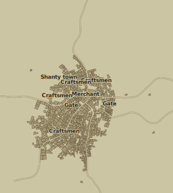

Big trading outpost at crossing of 2 roads. You can barely call it home and you certainly can’t call it town but regardless of what you wish to call it you can buy anything in its narrow alleyways and open markets. Really, anything; food, weapons, magic items, guides and more… shady… things. But be careful where you step and when you choose to be there, Four Finger Crossing has no law.
Size: Big sprawling mess
Connects to: Oldtown, Redmoore, Silverpine Port and Annuvien

In an arcane ward known for its legendary wizards and alchemists. The street outside is filled with the fragrance of blooming flowers.
The inn is a grand half-timbered building, with carved wooden doors and elf-wrought tables and chairs. Accommodations consist of several small rooms with beds and woolen mattresses. The inn is locally known for the variety of its meads and wines.
The innkeeper is a thin female human named Helthru. She blames trolls for every misfortune.
In a market district, northeast of an outcrop of rune-carved stone. The street outside is lined with street vendors hawking their goods.
The inn is a single storey half-timbered building, with a smooth stone floor. Accommodations consist of a mezzanine with several wooden cots.
The innkeeper is an instinctive male dwarf named Scandli Horrison.
A band of slave-trading ogres lurks in the ruins of Kada’s Delve.
Reward: 1000g
- Elet, Guild of Green Merchants